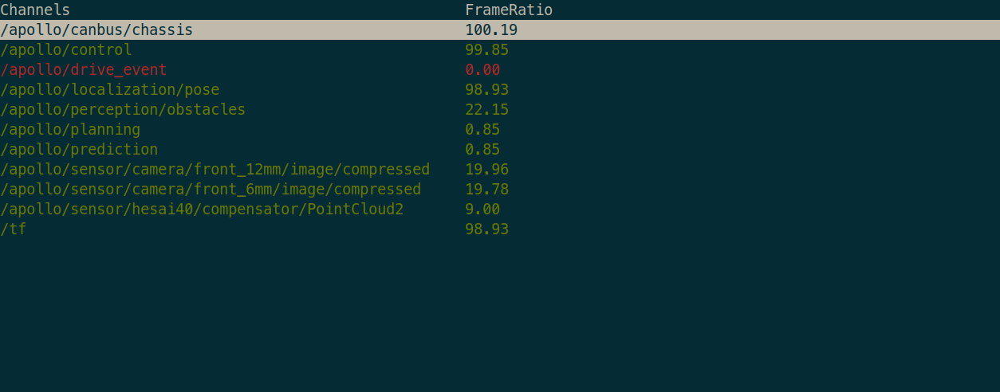

百度Apollo
百度Apollo是一款开源的工业级自动驾驶系统。本文档简要介绍了Apollo中与课程实验紧密相关的模块和工具。
1. Dreamview
Dreamview是Apollo官方提供的web程序，为用户提供了图形化的车辆状态监测和调试页面。更详细的信息请参考Dreamview文档。
cd apollo/docker/scripts
sudo bash dev_start.sh -l # 启动Apollo容器
sudo bash dev_into.sh # 进入Apollo容器
# Apollo容器内
./scripts/bootstrap.sh # 运行Dreamview
http://localhost:8888，即可访问Dreamview页面。
2. CyberMonitor
命令行工具CyberMonitor提供了终端中实时显示channel信息列表的功能。  常用操作：
ESC | q key ---- 退出
Backspace ---- 后退
h | H ---- 显示帮助页
PageDown | Ctrl+d ---- 上一页
PageUp | Ctrl+u ---- 下一页
Up, down or w, s keys ---- 上下移动当前的高亮行
Right arrow or d key ---- 进入高亮行, 显示高亮行数据的详细信息
Left arrow or a key ---- 从当前界面返回上一层界面
Enter key ---- 与 d 键相同
f | F ---- 显示数据帧频率
t | T ---- 显示 channel 消息类型
Space ---- 关闭|开启 channel (仅在 channel 有数据到达时有效；channel 关闭后会变成黄色)
i | I ---- 显示 channel 的 Reader 和 Writer 信息
b | B ---- 显示 channel 消息内容
n | N ---- 显示消息中 RepeatedField 的下一条数据
m | M ---- 显示消息中 RepeatedField 的上一条数据
3. CyberRT
CyberRT是Apollo的实时通信框架，相关资料：